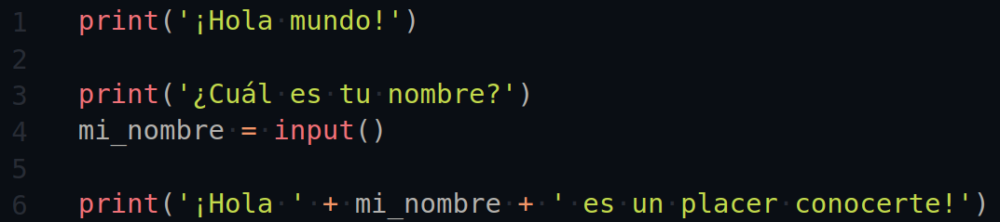

4 - Variables y operadores
Vamos a crear nuestras primeras variables, ver algunos consejos para sus nombres y los operadores de Python.
Operadores
Matemáticas básicas
Retomando un poco de la entrada anterior, hemos visto como utilizar la función print() para mostrar texto en pantalla, también al utilizar el IDLE y su ventana interactiva vimos que podemos hacer sumas.
Creo que es importante que, antes de dar el siguiente paso a las variables como tal, dar un vistazo rápido a como realizar operaciones simples en Python.
Ya hemos visto como realizar una suma, simplemente ponemos el signo de + entre dos números, podemos utilizar el REPL interactiva para hacer estas pruebas.
Suma
>>> 3 + 4
7
>>> -8 + 3
Resta
Para realizar una resta, utilizamos el signo de -
>>> 5 - 2
3
>>> -8 - 4
-12
Como vemos, podemos hacer uso de números negativos, esto es igual con cualquier otro tipo de operación matemática. También puedes observar que he escrito el signo negativo unido al 8 en lugar de algo como
- 8 - 4O algo como esto
En Python, ambas operaciones están bien y son exactamente iguales, pero es una convención hacerlo como en el primer caso por cuestiones de legibilidad, es decir, para hacerlo más fácil de leer por personas, hablaremos de esto más adelante.
Multiplicación
Para realizar una multiplicación, utilizamos el signo *
>>> 4 * 6
24
>>> 3 * -5
-15
>>> 2 * 0
0
División
Para realizar una división utilizamos el signo /
>>> 27 / 3
9.0
>>> 30 / -5
-6.0
Aquí hay varias cosas que añadir.
Primero, el resultado de la priemra división, como podemos ver es 9.0 en lugar de simplemente 9,
¿a qué se debe? bueno, esto tiene que ver con el tipo de los valores, hablaremos de eso en un momento,
solo hay que aclarar que no es un error ni nada parecido.
También hay que destacar una cosa, y es que si intentamos realizar una división entre cero, tendremos un ZeroDivisionError.
>>> 3 / 0
Traceback (most recent call last):
File "<pyshell#0>", line 1, in <module>
3 / 0
ZeroDivisionError: division by zero
De nuevo, ya hablaremos de esto un poco más adelante en este mismo post.
Exponencial
Para calcular el valor de un número X elevando a Y potencia, podemos utilizar el operador **
>>> 3 ** 3
27
Integer division
Así como tenemos la división normal, podemos realizar una división muy similar en python, la cual nos da como resultado un número entero, redondeando el resultado para así ignorar el residuo de la operación.
>>> 22 / 8
2.75
>>> 22 // 8
2
Módulo
El operador de módulo %, es un poco más complicado de explicar, en resumen, nos da el restante de una división.
>>> 22 % 8
6
>>> 5 % 2
1
En este caso, el resultado es 6, ya que 22 se puede dividir entre 8 dos veces, y nos restan 6, del mismo modo 5 puede dividirse entre 2, 2 veces y el sobrante es 1.
Se que este operador puede ser un poco extraño de primeras, pero es muy útil ya lo iremos viendo con algunos ejemplos prácticos más adelante.
Jerarquía de operadores
Python sigue la jerarquía de las matemáticas para realizar sus operaciones, y como en las matemáticas,
aquí también pueden utilizarse parentesis para cambiar la prioridad de algunas operaciones.
Aquí dejo una lista con la prioridad de los operadores:
- ** Exponencial
- % Módulo/restante
- // División entera
- / División
- * multiplicación
- - Resta
- + Suma
Variables y nombres
El nombre de una variable
En Python, una variable es un nombre que se le asigna a un valor y es utilizado para referirse a ese valor particular a lo largo del código. Las variables son fundamentales para la programación por dos razones:
Mantienen los valores accesibles: por ejemplo, el resultado de una operación puede ser almacenado en una variable, de modo que la operación no tenga que ser realizada cada vez que se requiera ese valor.
Dan contexto a los valores: por ejemplo, el número 42 puede significar muchas cosas, la edad de una persona, la cantidad de alumnos de una clase, el area de una figura, la cantidad en inventario de un producto, las veces que se a accedido a una página web, la cantidad de archivos en una carpeta, etc. Darle a esta variable un nombre como num_estudiantes hace que el significado de ese valor sea claro.
Operador de asignación
Los valores son asignados a las variables utilizando un sumbolo especial llamado operador de asignación (=)
para ver el funcionamiento del operador de asignación, vamos a recrear el ejemplo del post anterior.
>>> frase = "Hola mundo"
>>> print(frase)
Hola mundo
En la primera linea, la variable llamada frase es creada y se le asigna el valor "Hola mundo", entonces al llamar a la función print() se le pasa como parametro la variable frase.
el output Hola mundo es mostrado cuando ejecutas print(frase) ya que Python busca la variable frase y encuentra que tiene asignado el valor "Hola mundo".
Si ejecutas la linea print(frase) antes de ejecutar frase = "Hola mundo" verás un error NameError, ya que la variable frase no existe todavía al momento de hacer referencia a ella.
Las variables en Python tienen algo llamado Case-sensitive, lo que implica que una variable llamada Frase es completamente diferente de una llamada frase, por lo que escribirla distinto a como la creaste originalmente, dará un NameError.
>>> frase = "Hola mundo"
>>> print(Frase)
Traceback (most recent call last):
File "<pyshell#0>", line 1, in <module>
NameError: name 'Frase' is not defined
Reglas para nombres de variables válidos
Los nombres de las variables pueden ser tan largos o cortos como quieras, pero hay un par de reglas que deberías seguir. Las variables solo deben tener letras mayúsculas y minúsculas, números y guiones bajos, además, estas no pueden empezar con números.
Las variables pueden contener en sus nombres una gran cantidad ve caracteres integrados en el estándar Unicode. Unicode es un estándar de códificación de caracteres, esto significa que las variables pueden contener un montón de caracteres que no pertenecen a nuestro alfabeto, como kanjis Chinos y Japoneses e incluso símbolos Árabes.
Aún así, muchos dispositivos suelen tener problemas para mostrar algunos caracteres decorados o que se encuentran fuera del alfabeto inglés, por lo que es recomendable usarlos lo menos posible en caso de trabajar con más personas.
Unicode es un tema apasionante que por desgracia se queda fuera del tema de este curso, pero tengo la intención de hablar sobre eso en un post más adelante, cuando lo haga pondré un enlace aquí para ir a ese artículo. Por ahora, dejaré un enlace a la entrada sobre el tema en la Wikipedia en español. haz click aquí si quieres saber más.
Que el nombre de una variable sea valido no significa que sea un buen nombre. Elegir un buen nombre para las variables puede ser sorpresivamente difícil en algunas ocasiones, pero en cualquier caso, te dejo aquí una pequeña guía que puede llegar a servirte para elegir un buen nombre.
Un nombre descriptivo es mejor que un nombre corto
Los nombres descriptivos para las variables son esenciales, especialmente para programas complejos. A menudo, las variables descriptivas requieren varias palabras, así que no te preocupes por utilizar nombres largos.
>>> d = 7En este ejemplo, la d es un nombre completamente ambiguo, usar una palabra completa puede hacerlo más entendible
>>> dias = 7dias es un nombre mejor que d ya que brinda contexto, pero sigue sin ser suficiente, ¿7 es la cantidad de días de qué? ¿días restantes para la entrega de un paquete? ¿los días desde que se hizo un registro?
>>> dias_por_semana = 7ahora no hay forma de pensar cualquier otra cosa, 7 es la cantidad de dias en una semana, y sí puede parecer un ejemplo tonto, además que escribir dias_por_semana toma mucho más tiempo que simplemente escribir dias o d, pero creeme, cuando tienes cantidades enormes de código que leer, con grandes cantidades de variables, o es un código que no has tocado en meses, o es el código de otra persona, una simple elección adecuada a la hora de nombrar las variables puede ahorrar una cantidad enorme de tiempo y hacer que todo sea mucho más fácil de entender.
Siempre ten presente una cosa, las computadoras interpretan código, no les importa que nombre les des siempre y cuando cumplan la regla de no empezar con números o caracteres ajenos a Unicode, pero las personas somos diferentes, las máquinas interpretan código, nosotros leemos código, hacer de este proceso lo más eficiente posible, es una necesidad.
Hay diferentes maneras de escribir más de una palabra en el nombre de una variable, está el conocido camelCase, por ejemplo numAlumnos o ListaDeNombres. Este se llama así debido a que las mayúsculas al inicio de cada nueva palabra simulan las jorobas de los camellos.
También está el caso de snake_case que utiliza guiones bajos, como num_alumnos Este es el estilo recomendado en el PEP 8, un documento que contiene las reglas "oficiales" de estílo, o más bien las recomendadas al escribir código Python.
Realmente puedes utilizar el estílo que te parezca más agradable a ti, pero lo realmente importante es que tengas consistencia a la hora de escribir código. En el momento que te decidas por un estilo, utilizalo siempre durante todo el proyecto.
Primer programa utilizando variables
Finalmente, vamos a crear nuestro primer programa utilizando variables con todo lo que hemos aprendido durante este post. Abre el editor de código de tu preferencia o el IDLE de Python y escribe el siguiente código en el, guardalo con el nombre hello_world.py. Ahora iremos comentando poco a poco lo que este hace para finalizar.
Guarda tu código, accede a la carpeta donde guardaste tu archivo desde la consola y ejecuta el comando python hello_world.py
Como mencioné antes, en Windows es muy probable que al arrancar este código se cierre automáticamente, por lo que recomendaría utilizar la instrucción input() en la última linea para evitar que esta se cierre hasta presionar enter.
Muy bien, expliquemos linea por linea lo que ocurre aquí.
En la linea 1 tenemos una instrucción conocida, imprimimos el texto "Hola mundo"
en pantalla, nada nuevo.
Del mismo modo, en la linea 3, imprimimos un texto, concretamente
"¿Cuál es tu nombre?"
En la linea 4, creamos una variable llamada mi_nombre y hacemos uso del operador de asignación para darle el valor... input()?
La función input(), como quizá ya habrás supuesto, sirve para tomar un input del
usuario,
leer lo que escribe en la consola y lo convierte en un valor de tipo string. Entonces, esta linea de
código,
básicamente hace eso, toma lo que el usuario escriba y lo almacena en la variable mi_nombre.
Hablaremos del tema de los tipos de variables en el siguiente post, por ahora solo hay que entender eso.
la linea 6 es un poco más complicada de entender, pero no demasiado, quizá lo único que puede llegar acausar confusión es el uso del operado +, eso se debe a que en Python, este simbolo tiene más de un significado, cuando este se utiliza con valores de tipo string, se convierte en el operador de concatenación.
Imaginemos que al ejecutar el programa ingresas el nombre David, entonces la forma en la que Python evalúa esas operaciones es la siguiente:
- '¡Hola ' + mi_nombre + ' es un placer conocerte!'
- '¡Hola ' + 'David' + ' es un placer conocerte!'
- '¡Hola David' + ' es un placer conocerte!'
- '¡Hola David es un placer conocerte!'
Entonces cuando termina este proceso imprime el string resultante por pantalla.
Para finalizar dejaré este ejemplo de la ejecución del programa.
>>> ==================== RESART ====================
>>>
¡Hola mundo!
¿Cuál es tu nombre?
David
¡Hola David es un placer conocerte!
>>>
Como ya mencioné antes, en el próximo post, hablaremos sobre los tipos de variables.
Se que estamos dejando muchas cosas sin explicar, además que estos post se vuelven un poco largos, pero es completamente necesario para entender estas bases, pero prometo que en cuanto veamos el siguiente tema, empezará la cumbia de verdad, empezaremos con ejercicios y podremos entrar en temas que den mucho más dinamismo a nuestros programas.